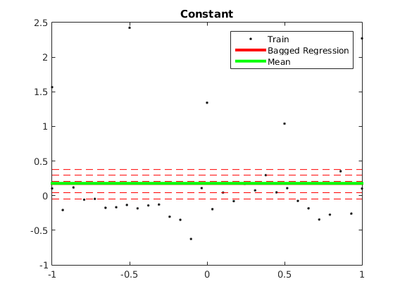
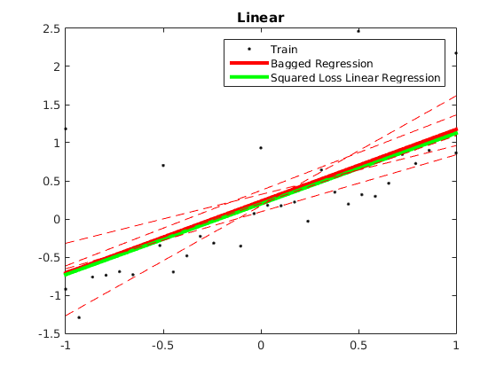

Contents
Description of demo_regression_bagging.m
Demonstrates bagged mean regression and linear regression models. Red dashed lines are predictions from individual models trained on bootstrap samples of the dataset.
clear all close all generateData_constant
usage of mean regression (constant data)
options_mn = [];
model_mn = ml_regression_mean(Xtrain, ytrain, options_mn);
yhat_mn = model_mn.predict(model_mn, Xtest);
testError_mn = mean(abs(yhat_mn - ytest));
fprintf('Averaged absolute test error with %s is: %.3f\n', model_mn.name, testError_mn);
Averaged absolute test error with Mean is: 0.526
usage of bagging mean regression (constant data)
options_bg3 = [];
options_bg3.nModels = 5;
options_bg3.subModel = @ml_regression_mean;
options_bg3.subOptions.addBias = 1;
model_bg3 = ml_regression_bagging(Xtrain, ytrain, options_bg3);
yhat_bg3 = model_bg3.predict(model_bg3, Xtest);
testError_bg3 = mean(abs(yhat_bg3 - ytest));
fprintf('Averaged absolute test error with %s is: %.3f\n', model_bg3.name, testError_bg3)
Averaged absolute test error with Bagged Regression is: 0.525
plotRegression1D(Xtrain, ytrain, model_bg3, model_mn); for k = 1:length(model_bg3.trainModels); plot(linspace(-1,1,30),model_bg3.trainModels{k}.predict(model_bg3.trainModels{k}, linspace(-1,1,30)'), 'r--'); end title('Constant'); generateData_linear
usage of L2 regression (linear data)
options_l2 = [];
options_l2.addBias = 1;
model_l2 = ml_regression_L2(Xtrain, ytrain, options_l2);
yhat_l2 = model_l2.predict(model_l2, Xtest);
testError_l2 = mean(abs(yhat_l2 - ytest));
fprintf('Averaged absolute test error with %s is: %.3f\n', model_l2.name, testError_l2);
Averaged absolute test error with Squared Loss Linear Regression is: 0.198
usage of bagging L2 regression (linear data)
options_bg2 = [];
options_bg2.nModels = 5;
options_bg2.subModel = @ml_regression_L2;
options_bg2.subOptions.addBias = 1;
model_bg2 = ml_regression_bagging(Xtrain, ytrain, options_bg2);
yhat_bg2 = model_bg2.predict(model_bg2, Xtest);
testError_bg2 = mean(abs(yhat_bg2 - ytest));
fprintf('Averaged absolute test error with %s is: %.3f\n', model_bg2.name, testError_bg2)
Averaged absolute test error with Bagged Regression is: 0.233
plotRegression1D(Xtrain, ytrain, model_bg2, model_l2); for k = 1:length(model_bg2.trainModels); plot(linspace(-1,1,30),model_bg2.trainModels{k}.predict(model_bg2.trainModels{k}, linspace(-1,1,30)'), 'r--'); end title('Linear');